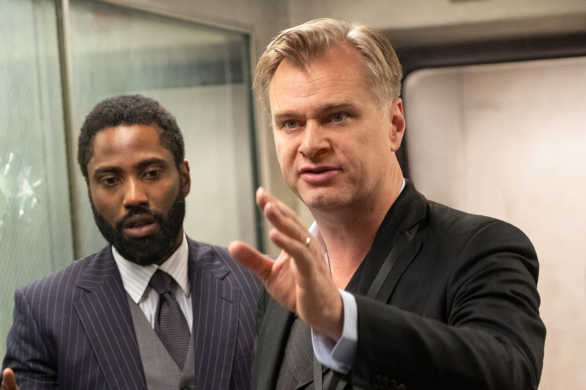

Biografie
Biografie
Ludwig Göransson, geboren am 1. September 1984 in Linköping, Schweden, ist ein Oscar-, Emmy- und Grammy-prämierter Komponist, Musiker und Musikproduzent. Bekannt ist er unter anderem als Produzent von Childish Gambino, sowie für die Filmmusik zu Black Panther. Zudem schrieb er den Soundtrack zu dem Film TENET.
Der schwedische Komponist Ludwig Göransson. - Julian Berman für «the New York Times»
Tenet
Tenet
Ein CIA-Agent wird rekrutiert, um einen besonderen Auftrag auszuführen. Er soll den 3. Weltkrieg verhindern. Es muss eine Person gestoppt werden, die die Fähigkeit besitzt, die Zeit zu manipulieren. Von einer Wissenschaftlerin erfährt er, dass es Menschen in der Zukunft gelingen wird, die Entropie von Objekten umzukehren, sodass diese Objekte temporal invertieren. So werden Kugeln mit Schusswaffen nicht abgeschossen, sondern aufgefangen. Immer mehr solcher Objekte werden gefunden.
John David Washington (links) und Regisseur Christopher Nolan (rechts) auf dem Set von «Tenet». - «Warner Bros»
Musik
Musik
Tenet basiert auf dem Konzept der Zeitreise mit einer Umkehrung von Zeit und Raum. So setzte Ludwig Göransson Techniken der retrograden Komposition ein, die es ermöglichen, dass Melodien vorwärts und rückwärts gespielt gleich klingen.